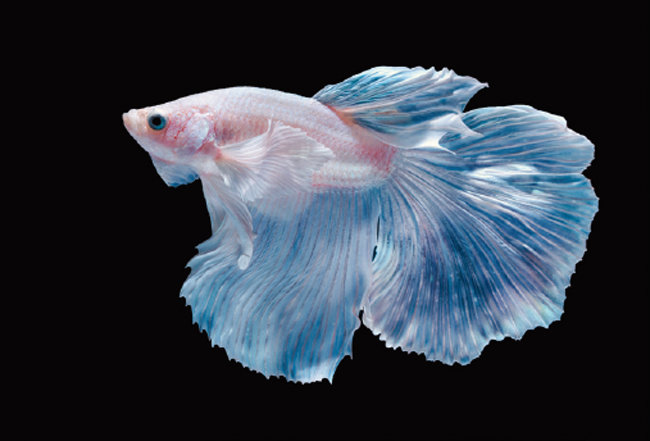

화려한 지느러미와 강렬한 색채를 가진 아름다운 투어(鬪魚)입니다.
수컷의 경우 매우 크고 화려한 지느러미와 강한 영역 다툼 성향을 가집니다. 암컷은 수컷보다 수수하며, '투어'라는 별명처럼 수컷끼리는 합사가 불가능합니다.
주로 육식성이며, 베타 전용 사료나 건조 장구벌레, 실지렁이 등의 생먹이를 급여합니다. 과식하지 않도록 소량씩 급여하는 것이 중요합니다.
2년 ~ 5년
쉬움~보통. 물의 용존 산소가 부족해도 호흡할 수 있는 '아가미 라비린스 기관'이 있어 비교적 키우기 쉽지만, 깨끗한 물과 온도 관리는 필수입니다.
수온 24~27℃를 유지해야 하며, 유속(물살)이 약한 환경을 선호합니다. 수컷은 반드시 단독 사육해야 하며, 수조 내에 숨을 공간이나 수초를 제공하면 안정감을 느낍니다.

수컷의 크고 아름다운 지느러미가 특징입니다.